Beginning in the late 1940s, the Chu Chi Tunnels were originally dug by the Viet Minh during the war against the French. Extended by the Viet Cong in the 1960s, the tunnel system stretched from Saigon to the Cambodian border and enabled the VC to mount surprise attacks on the US military and then to disappear into hidden trapdoors without trace. The network, parts of which were several storeys deep, included storage facilities, weapon factories, field hospitals and kitchens.
There is also a gun range attached where tourists can shell out a small fortune (you pay per bullet) to fire genuine AK47s and machine guns. The guards looked bored and disinterested.
The tunnels we visited have been enlarged to accommodate tourists (1.2m high, 80cm across and unlit) although they are still a tight, airless and claustrophobic squeeze. I forced myself to go through one of the tunnels (30m in length or so) and emerged feeling disorientated and sweaty at the other end.
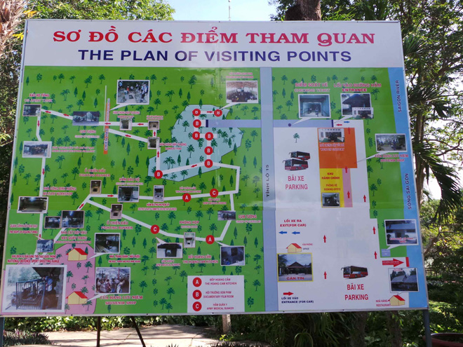
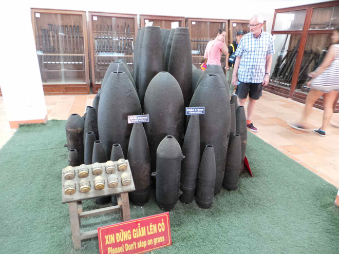
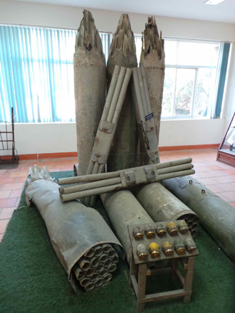
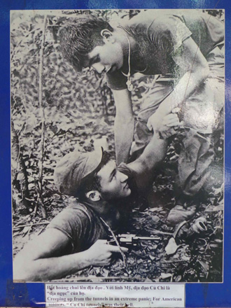
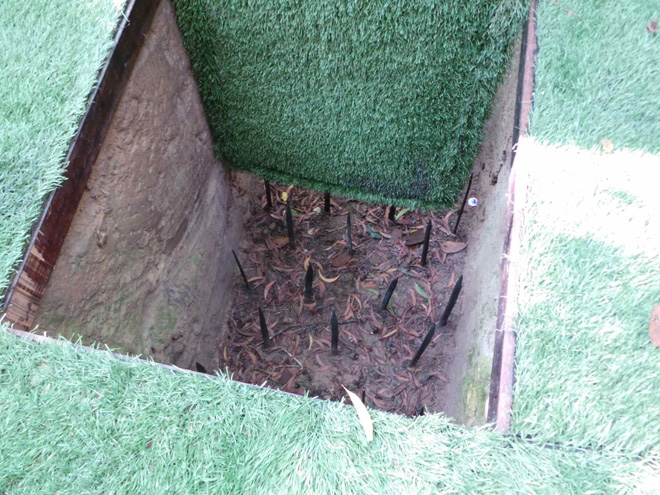
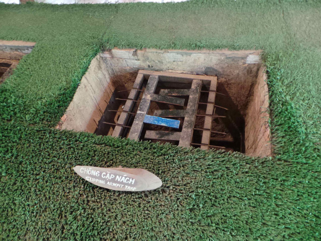
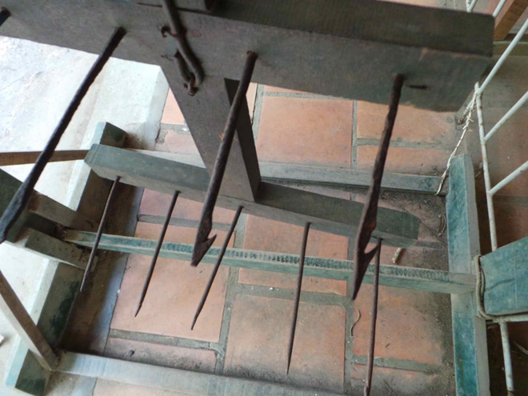
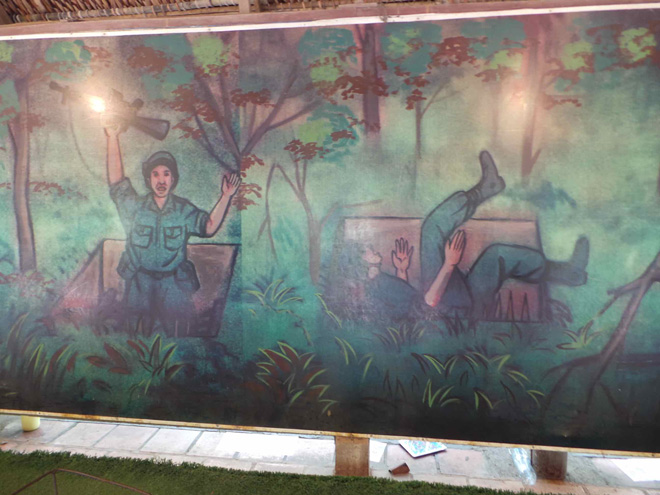
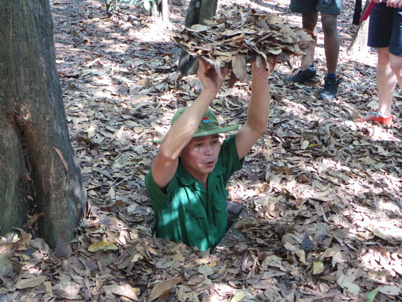
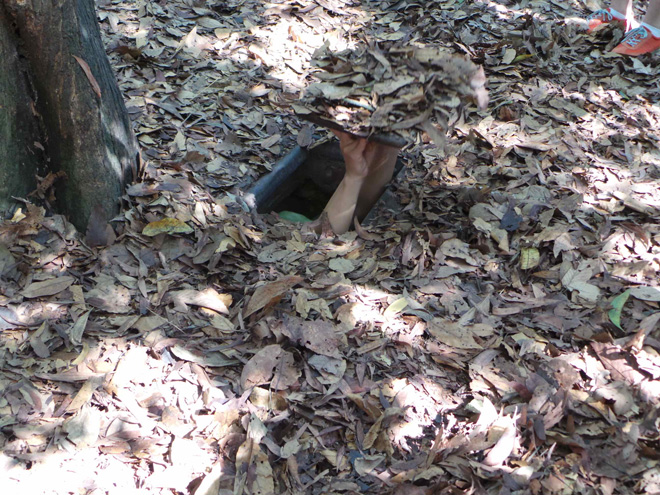
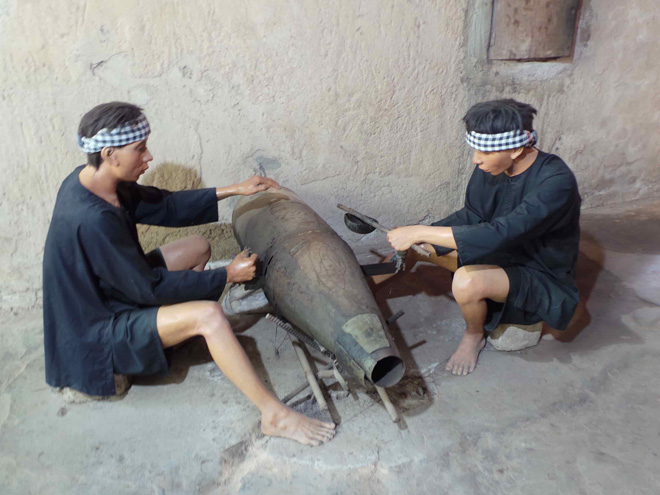
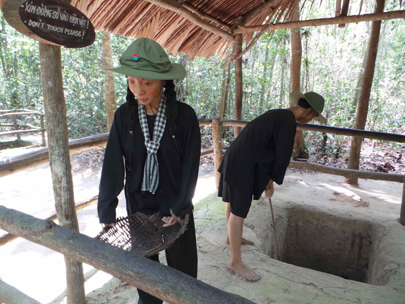
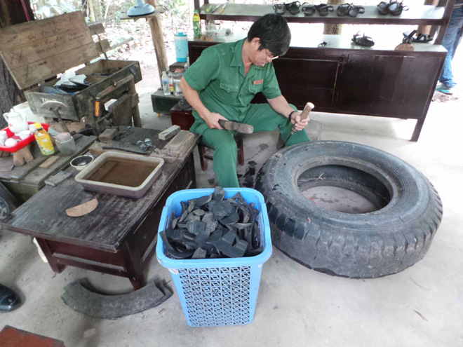
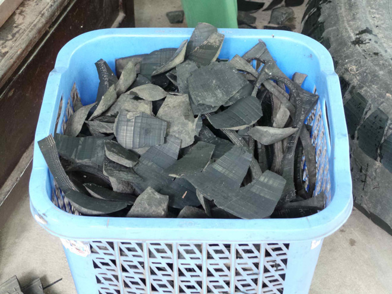
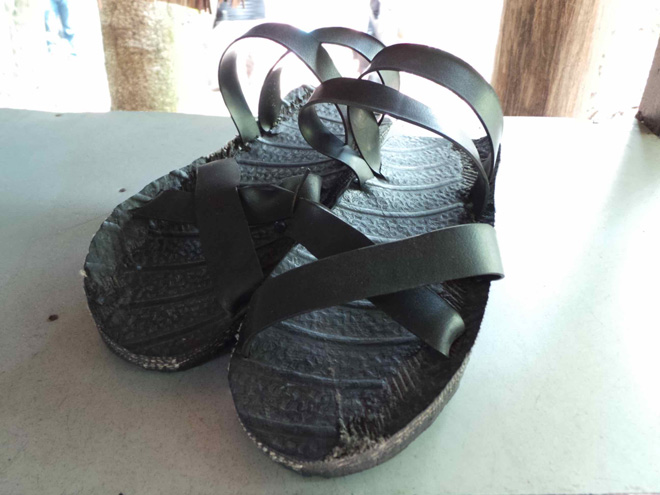
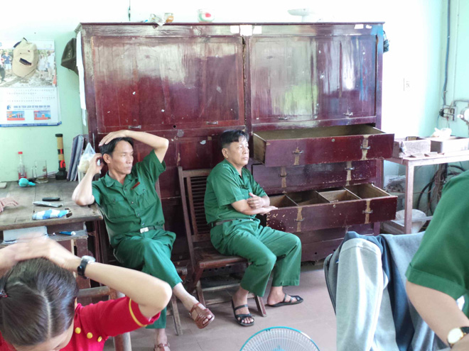
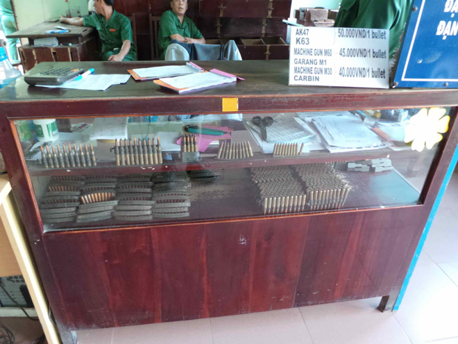
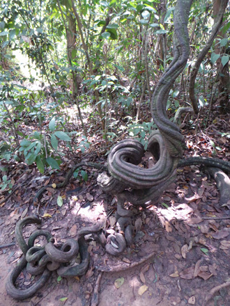
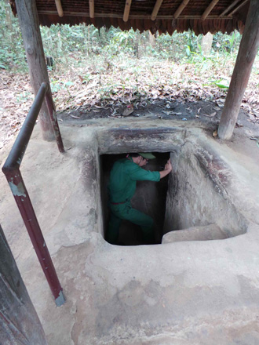
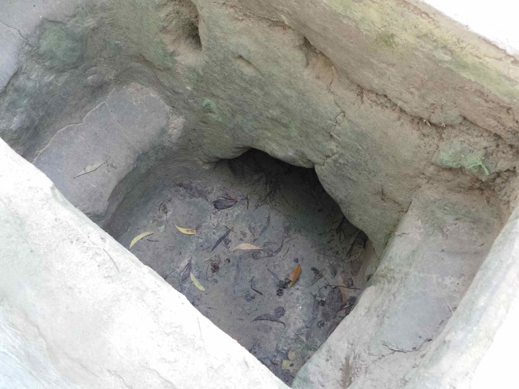
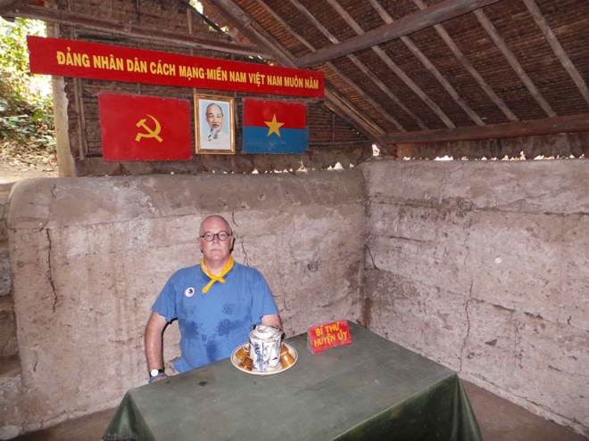